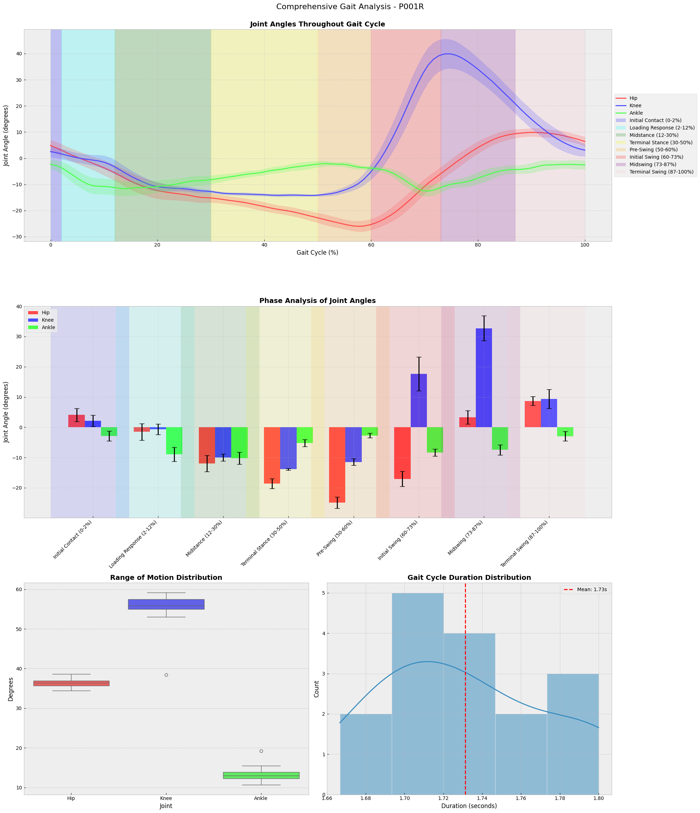

SELECTED TECHNICAL NOTES
Comparing walking cycles
The analysis aligns individual walking cycles so the same phases can be compared. The plots show how joint angles vary through a cycle.
Cycle comparison
Selected code excerpts from the original work, shown for reading rather than execution. Setup cells, raw data previews and training logs are omitted.
import pandas as pd
import numpy as np
import matplotlib.pyplot as plt
import seaborn as sns
from scipy.interpolate import interp1d# Plotting function to compare original and interpolated joint angles
def plot_comparison(cycles, joints=['Hip', 'Knee', 'Ankle'], num_points=100):
# Create subplots with 3 rows and 2 columns
_, axes = plt.subplots(nrows=3, ncols=2, figsize=(20, 12))
# Plot non-interpolated (left column) and interpolated (right column)
for idx, joint in enumerate(joints):
# Non-interpolated plot (left)
for i, (cycle_name, cycle_slice) in enumerate(cycles.items(), start=1):
axes[idx, 0].plot(cycle_slice[joint].values, label=f"Cycle {i}")
axes[idx, 0].set_xlabel('Frames')
axes[idx, 0].set_ylabel(f'{joint} Angle')
axes[idx, 0].grid(True, linestyle='--', alpha=0.7)
axes[idx, 0].set_title(f'Non-interpolated {joint} Angle')
# Interpolated plot (right)
for i, (cycle_name, cycle_slice) in enumerate(cycles.items(), start=1):
x_old = np.arange(len(cycle_slice[joint]))
x_new, y_new = interpolate_cycle(cycle_slice[joint], num_points)
axes[idx, 1].plot(x_new / max(x_new), y_new, label=f"Cycle {i}") # Normalize x-axis to [0, 1]
axes[idx, 1].set_xlabel('Normalized Frames')
axes[idx, 1].set_ylabel(f'{joint} Angle')
axes[idx, 1].grid(True, linestyle='--', alpha=0.7)
axes[idx, 1].set_title(f'Interpolated {joint} Angle')
# Add legends
axes[idx, 0].legend(loc='upper right', bbox_to_anchor=(1.15, 1), fontsize='small')
axes[idx, 1].legend(loc='upper right', bbox_to_anchor=(1.15, 1), fontsize='small')
plt.tight_layout()
plt.show()A closer look at the output
